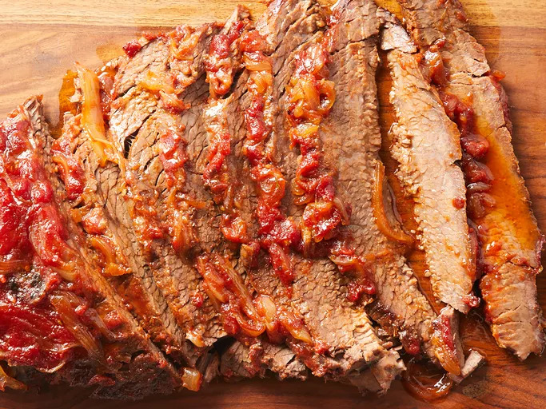

Simply the Easiest Beef Brisket

Description
An easy brisket recipe as the name suggests — and simply the best. This a great recipe to make the day before and reheat to serve.
Ingredients
- 1 (3 pound) beef brisket, trimmed of fat
- salt and pepper to taste
- 1 medium onion, thinly sliced
- 1 (12 fluid ounce) can beer
- 1 (12 ounce) bottle tomato-based chili sauce
- ¾ cup packed brown sugar